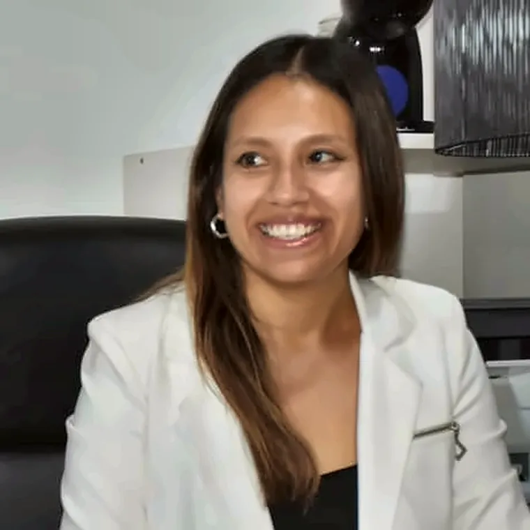
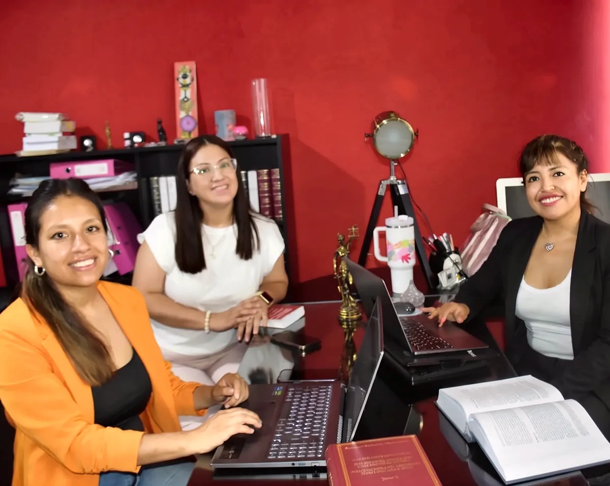
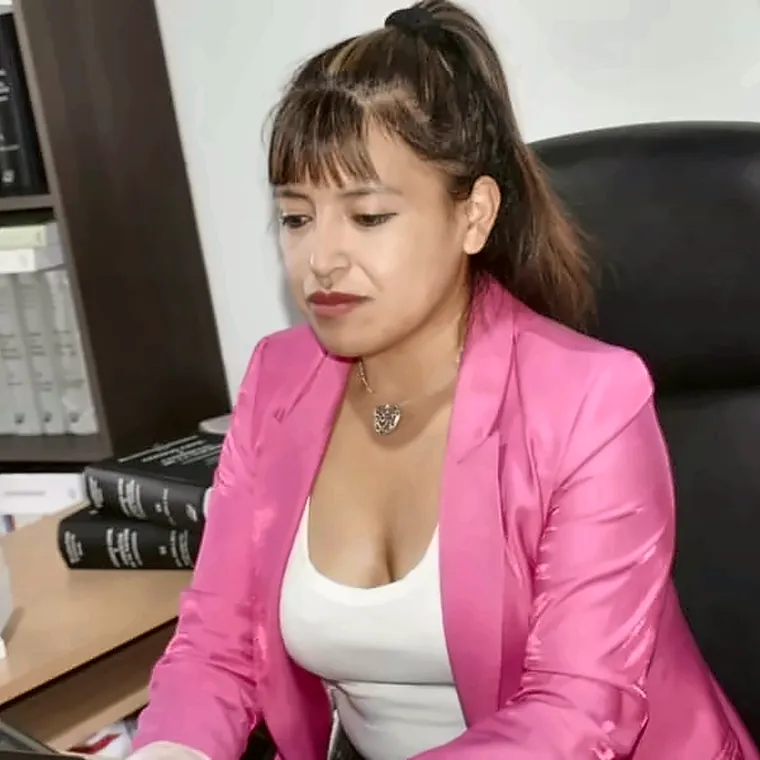

Lawyers in Jujuy, Argentina. Your legal gateway from abroad.
If you or your company need something legal done in Jujuy and you are in another country, we take care of it here and keep you informed.
San Salvador de JujuyEl Carmen, Jujuy
Who we help
Business law is our main specialty.
- Foreign companies and entrepreneurs that want to register a trademark, set up a company or sign contracts in Argentina.
- Argentines living abroad with an inheritance, a property or a pending procedure in Jujuy.
- Families who need a trusted lawyer to handle a matter in Jujuy on their behalf.
How it works
Write to us
Tell us your country and what you need, by WhatsApp or email.
We review your case
We explain the options, the steps and the fees before moving forward.
We handle it in Jujuy
You stay informed from wherever you are.
Practice areas

- Companies and trademarksTrademark and patent registration, setting up or restructuring a company (SAS, SRL, SA), contracts.
- Inheritance and propertySuccessions, deeds and property regularization in Jujuy for families living abroad.
- Family mattersDivorce, child support and parenting arrangements when one party lives outside Argentina.
- Criminal, labor and accidentsCriminal defense, labor claims, accident and damage claims in the Province of Jujuy.
Our team
Three lawyers registered in the Province of Jujuy.
M.P. 3742


Tell us what you need.
San Salvador de Jujuy: Independencia 658, 1st floor, Office 1. El Carmen: Sarmiento 520, Barrio Centro.